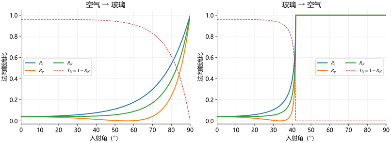

22 从场振幅到能流：反射率、透射率与自然光
用Poynting能流及界面投影推导R和T，证明各偏振守恒，再按偏振权重得到自然光反射率。
透射电场是入射的1.2倍，能量哪里来
玻璃 到空气
到空气 正入射，上课得到
正入射，上课得到 。如果误用
。如果误用 ，会得144%的透射能量。缺的不是额外能量源，而是介质中的光强系数和穿过同一个界面的几何投影。
，会得144%的透射能量。缺的不是额外能量源，而是介质中的光强系数和穿过同一个界面的几何投影。

 投影。比较能量必须使用同一界面面积和同一时间。
投影。比较能量必须使用同一界面面积和同一时间。光强和穿界面能流是不同的量
由§11-1，单色平面波的时间平均Poynting能流为

 是峰值电场复振幅（V/m），
是峰值电场复振幅（V/m）， 单位S，
单位S， 单位W/m²；若使用有效值振幅，就不应再带
单位W/m²；若使用有效值振幅，就不应再带 。课件P20写
。课件P20写 ，在实振幅传播折射支没有问题；用复振幅或全反射时必须改成模平方并从实际Poynting场计算。
，在实振幅传播折射支没有问题；用复振幅或全反射时必须改成模平方并从实际Poynting场计算。
取界面面积 和时长
和时长 ，过面的能量为
，过面的能量为

 单位J；
单位J； 是界面法向功率面密度（W/m²）。P20把这后一个量写为
是界面法向功率面密度（W/m²）。P20把这后一个量写为 并称“单位面元的光能”，实际上若未乘时间，更准确应叫过面能流密度。反射在法向上朝回介质1，下面取其返回功率的正大小，避免把负法向分量当负能量。
并称“单位面元的光能”，实际上若未乘时间，更准确应叫过面能流密度。反射在法向上朝回介质1，下面取其返回功率的正大小，避免把负法向分量当负能量。
反射率为什么是r的平方，透射率却还要一个因子
定义课件 对应反射率
对应反射率 ，
， 对应透射率
对应透射率 ，两个均无量纲：
，两个均无量纲：

因为反射和入射在同一介质、反射角等于入射角，导纳和投影都抵消。透射进入不同介质、方向也不同：

非磁近似 时
时

玻璃到空气正入射， 、
、 ，两者和1。电场增强、导纳变小，所以场幅值和能量不能用同一个比例表示。
，两者和1。电场增强、导纳变小，所以场幅值和能量不能用同一个比例表示。
这些简式用于两侧传播平面波。全反射时 变为复数，不能把复
变为复数，不能把复 直接乘
直接乘 叫实透射率；应算平均法向Poynting分量，后面会得到介质2平均法向传输为零、界面仍有倏逝场。
叫实透射率；应算平均法向Poynting分量，后面会得到介质2平均法向传输为零、界面仍有倏逝场。
s、p各自守恒：不用靠“相加应该是1”猜结果

把两个振幅公式分别代入：


以上平方式取实传播折射支；一般系数要模平方。令s分母中的 ，有
，有 ，所以
，所以 。p取
。p取 ，相同恒等式给
，相同恒等式给 。这把能量守恒和场边界解直接连起来，单位和极限检查也同时完成。
。这把能量守恒和场边界解直接连起来，单位和极限检查也同时完成。
P21还给出三角形式，完整保留为


正入射、Brewster附近和某些等折射率情形会出现三角比值的形式奇点，应使用余弦形式或极限。若考虑吸收、散射、额外衍射级或表面损耗，必须把相应能量去向加入平衡，不能无条件要求这里只有 。
。
任意入射方位角：先按能量权重分解

按P22公式， 应取电矢量与p方向（入射面内横向基底）的夹角；原页没有另画角度示意，本文明确约定以配合其
应取电矢量与p方向（入射面内横向基底）的夹角；原页没有另画角度示意，本文明确约定以配合其 权重。线偏振入射振幅
权重。线偏振入射振幅 。正交电场分量的能流相加没有交叉项，于是
。正交电场分量的能流相加没有交叉项，于是

 给纯p，
给纯p， 给纯s，恰好检查角度定义。如果把改为与s方向的角，就必须交换两个权重，不能公式与角度各用一种约定。
给纯s，恰好检查角度定义。如果把改为与s方向的角，就必须交换两个权重，不能公式与角度各用一种约定。
自然光在统计平均意义下无优选横向方向，对任意正交s、p分量有相等平均能量。因而

这是强度统计，不是把两束等幅、固定相位的相干光假装成自然光。代入三角式得到课件的
![R_N=\frac{1}{2}\left[
\frac{\sin^2(\theta_1-\theta_2)}{\sin^2(\theta_1+\theta_2)}
+\frac{\tan^2(\theta_1-\theta_2)}{\tan^2(\theta_1+\theta_2)}
\right].](../../assets/11-2/%E5%85%AC%E5%BC%8F-dff694745ec2d3e1.svg)
P22的4.26%是什么条件下的数
正入射时 ，所以
，所以

空气到相对折射率 玻璃，结果为
玻璃，结果为 ，即4.26%，与课件数值一致。玻璃到空气正入射得到相同反射率；方向反转会改变带符号的场系数，却不改变这个正入射能量比例。
，即4.26%，与课件数值一致。玻璃到空气正入射得到相同反射率；方向反转会改变带符号的场系数，却不改变这个正入射能量比例。
P22说“ 时自然反射率几乎不变”，需要补条件：对于空气到普通玻璃，较小入射角时这是粗略趋势，而非恒等式。按
时自然反射率几乎不变”，需要补条件：对于空气到普通玻璃，较小入射角时这是粗略趋势，而非恒等式。按 计算，
计算， 时
时 ，约5.30%，比4.26%高约1.05个百分点。玻璃到空气的临界角可小于45°，甚至已进入全反射，不能照用这句近似；要求精确能量损失时逐面代入实际角度。
，约5.30%，比4.26%高约1.05个百分点。玻璃到空气的临界角可小于45°，甚至已进入全反射，不能照用这句近似；要求精确能量损失时逐面代入实际角度。
回到本节主线：场边界给 ；Poynting与界面投影给
；Poynting与界面投影给 ；s/p能量权重给任意偏振和自然光。下一段课件将用这些结果算两片透镜的反射损失，再讨论Brewster偏振与全反射。
；s/p能量权重给任意偏振和自然光。下一段课件将用这些结果算两片透镜的反射损失，再讨论Brewster偏振与全反射。
